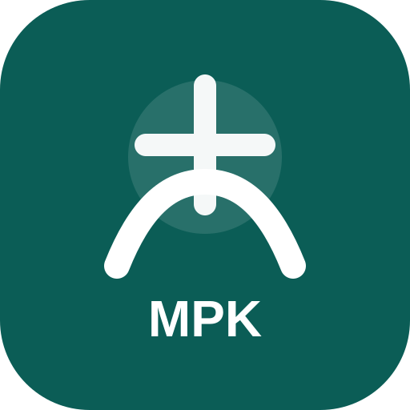

Buka aplikasi, lihat apa yang harus dilakukan hari ini, kerjakan sesuai urutan, lalu tandai selesai.
Tidak ada pilihan akun lain. PIN diverifikasi melalui server MPK-PMB.
—
PIN yang sama digunakan oleh akun Koordinator pada sistem MPK-PMB.